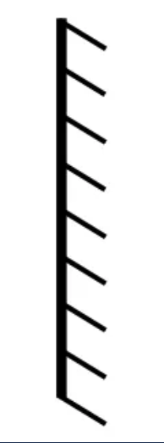
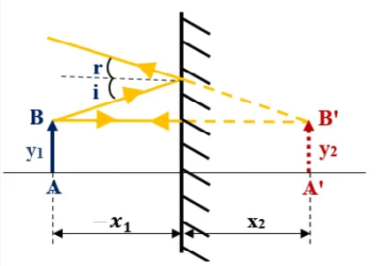
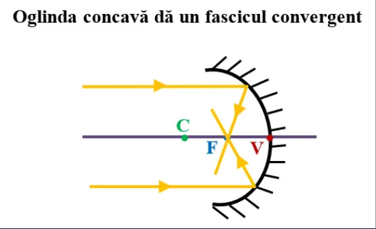
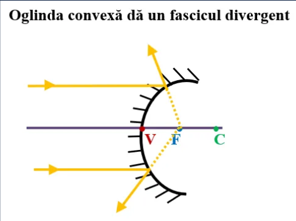
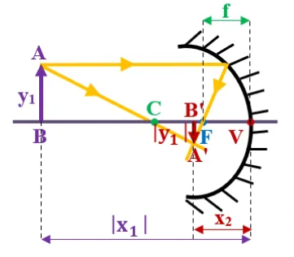
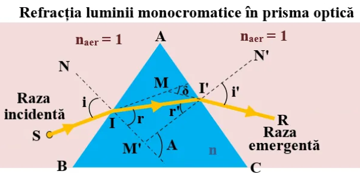

“Lumina se propagă între două puncte A și B, astfel încât drumul său optic și, implicit, intervalul de timp necesar parcurgerii distanței AB să fie minim.”
Reflexia luminii este fenomenul în care lumina se întoarce în primul mediu, cu schimbarea direcţiei de propagare, atunci când ea întâlneşte un alt mediu (suprafaţa de separare dintre două medii optice diferite).
Legile reflexiei:
- Legea I:
Raza incidentă, normala și raza reflectată sunt coplanare (aparțin aceluiași plan).
- Legea a II a:
Unghiul de incidență (i) este egal cu unghiul de reflexie (r).
Oglinzile plane
Oglinzile sunt corpuri netede și lucioase, în care lumina se reflectă.
Oglinzile plane au suprafața plană (dreaptă) și sunt cele pe care le avem cu toții acasă și în care ne uităm zilnic.
Iată simbolul ei (partea din spate care nu reflectă lumina se hașurează):

Formarea imaginii unui obiect într-o oglindă plană:
- Se desenează oglinda plană pe verticală.
- Se trasează prin mijlocul oglinzii axa optică principală, perpendiculară pe oglindă (pe orizontală).
- Se desenează obiectul AB sub forma unui segment cu săgeată, în fața oglinzii.
- Se duce prima rază din vârful obiectului (B) perpendiculară pe oglindă și se prelungește punctată în spatele oglinzii (fiind perpendiculară pe suprafața oglinzii nu își schimbă direcția de propagare când se reflectă).
- Se duce a doua rază din vârful obiectului (B) oblică pe oglindă se trasează raza reflectată a acesteia, respectând legile reflexiei (unghiul i = unghiul r)
- Se prelungește punctată în spatele oglinzii raza reflectată, până se întâlnește cu prelungirea primei raze. Punctul de intersecție al lor se notează cu B', care reprezintă vârful imaginii obiectului în oglindă.
- Din punctul B' se duce perpendiculară pe axa optică principală, iar piciorul perpendicularei se notează cu A' și reprezintă baza imaginii obiectului în oglindă. Se pune vârful săgeții în B'.

Caracteristicile imaginii A'B':
- Virtuală, deoarece se formează la intersecția prelungirilor razelor reflectate (în spatele oglinzii)
- Dreaptă
- Egală cu obiectul AB (y1 = y2)
- Ob. și Im. sunt simetrice față de oglindă
Formula oglinzii plane: x2 = -x1, deoarece R → ∞(nu are focare)
Mărirea liniară transversală : β = 1
Caracterizarea imaginii (A'B') obiectului în oglinda plană:
Ob. AB și im. A'B' sunt simetrice față de oglindă (imaginea se formează în spatele oglinzii, la aceeaşi distanţă faţă de oglindă ca şi obiectul).
Imaginea este virtuală, deoarece se formează la intersecția prelungirilor razelor reflectate (ea nu poate fi prinsă pe ecran sau film foto).
Im. A'B' este la fel de mare ca ob. AB.
Oglinzile sferice:
Oglinzile sferice sunt porțiuni din sfere (calote sferice) care reflectă lumina ce cade pe ele.
Clasificarea oglinzilor sferice:
a) Oglinzile concave reflectă cu partea interioară, scobită a suprafeței sferice (adică au partea lucioasă pe partea interioară a sferei). Ele transformă un fascicul de lumină paralel într-unul convergent.

b) Oglinzile convexe reflectă cu partea exterioară, bombată a suprafeței sferice (adică au partea lucioasă pe partea exterioară a sferei). Ele transformă un fascicul de lumină paralel într-unul divergent.

Formarea imaginii unui obiect într-o oglindă sferică
Pentru a forma imaginea unui obiect într-o oglindă sferică trebuie să ducem minim două raze:
Din vârful ob. A se duce o dreaptă paralelă cu axa optică principală până întâlnește suprafața oglinzii și de acolo se reflectă prin focar.
Din vârful ob. A se duce o dreaptă prin centrul de curbură până se intersectează cu prima rază (aceasta se reflectă pe aceeași direcție).
Cele două raze se prelungesc până se întâlnesc. Punctul lor de intersecție este vârful imaginii, A'. Din acest punct se duce o perpendiculară pe axa optică principală. Piciorul perpendicularei, B', este baza imaginii formate.

Formula oglinzilor sferice: (1 / x2) + (1 x1) = 1 / f = 2 / R
-Convexă:
Orice |x1| - Virtuală - Micșorată - Dreaptă
Refracția luminii:
Legile refracției luminii:
Indicele de refracție (notat cu n) al unui mediu transparent este dat de raportul dintre viteza luminii în vid (c) și viteza luminii în mediul respectiv (v).
Refracția luminii este fenomenul în care lumina își schimbă direcția de propagare atunci când traversează suprafața de separație dintre două medii transparente diferite.
Legea a II-a a refracției:
Raportul dintre unghiul de incidență(i) ș sinusul unghiului de refracție(r') este egal cu raportul dintre indicele de refracție absolut al mediului al II-lea și indicele de refracție absolut al I mediu:
sin i / sin r' = n2 / n1 = n21
n21 = indicele de refracție al mediului al II-lea față de primul
Consecințele refracției luminii:
Consecințele refracției luminii au loc datorită schimbării direcţiei razei refractate faţă de direcţia razei incidente, modificând imaginea obiectelor aflate în apă:
- Un corp aflat în apă pare rupt la suprafața apei, ca și cum partea din apă a corpului nu este în continuarea celei din aer.
- Un corp aflat în apă este perceput de ochiul nostru mai la suprafaţă decât este el în realitate. Astfel apele limpezi sunt mult mai adânci decât par.
- Obiectele aflate în apă par mai mari decât în realitate, apa comportându-se ca o lupă.
Prisma optică:
Refracția luminii monocromatice în prisma optică:
Prisma este un mediu transparent (cu indicele de refracție n) mărginit de două fețe plane, care fac între ele un unghi diedru, numit unghiul prismei (A).

Când raza incidentă (SI) cade pe fața AB a prismei se refractă (prima rază refractată II'), apropiindu-se de normala NI (naer < nprismă) după legea:
sin i = n ∙ sin r
Raza II' se refractă la căderea pe fața AC a prismei în punctul I', depărtându-se de normala NN' (nprismă > naer), după legea:
n ∙ sin r' = sin i'
Unghiul dintre direcția razei incidente (SI) și direcția razei emergente (I'R) se numește unghi de deviație (δ) care are valoarea:
δ = i + i' – (r + r') = i + i' – A
Pentru a stabili condiția de emergență (adică raza incidentă să iasă din prismă) trebuie să nu aibă loc reflexia totală a razei II' pe fața AC, adică:
r' ≤ l (unghiul limită).
Cum A = r + r' → r' = A – r
r ≥ A – l → sin r ≥ sin (A – l)
Dar din prima lege a refracției avem:
sin r = sin i / n
sin i / n >= sin (A - l)
Unghiul maxim de incidență este i = 90° → sin 90° = 1
1 / n >= sin(A - l)
sin l = 1 / n
sin l >= sin(A-l) sau A <= 2 ∙ 1
sin l = 1 / n → 1 = arc sin 1 / n
O rază incidentă pe prismă poate ieși din prismă dacă unghiul ei refringent (A) îndeplinește condiția:
A ≤ 2 ∙ arc sin 1/n
Dacă prisma are A > 2 ∙ arc sin 1/n, toate razele incidente pe prismă se vor reflecta total pe fața AC.
Când unghiul de incidență (i) variază și unghiul de deviație (δ) variază, luând întotdeauna valori mai mari decât o anumită valoare minimă (δm).
Când i = i' și r = r' obținem valoarea unghiul de deviație minimă (δm):
δm = 2 ∙ i – A
Dacă măsurăm experimental unghiul de deviație minimă se poate determina indicele de refracție al prismei cu formula:
n = sin((A + m) / 2) / sin (A / 2)
Tipuri de lentile:
Lentilele sunt corpuri transparente care au cel puțin o suprafață sferică.
Elementele unei lentile :
Axa optică principală care se trasează prin mijlocul lentilei.
Centrul optic al lentilei (O) aflat la intersecția lentilei cu axa optică principală.
Două focare așezate de-o parte și de alta față de centrul optic al lentilei, la distanțe egale.
Focarul aflat în partea stângă față de O se numește focar negativ / obiect (F1), deoarece se află pe axa numerelor negative.
Focarul aflat în partea dreaptă față de O se numește focar pozitiv / imagine (F2), deoarece se află pe axa numerelor pozitive.
Centrele de curbură (C1 și C2) ale dioptrilor care mărginesc lentila aflate de-o parte și de alta față de O, la o distanță dublă față de OF.
Clasificarea lentilelor:
- Lentile convergente (convexe) sunt lentilele care transformă un fascicul de lumină paralel într-un fascicul convergent. Ele refractă lumina prin focarul pozitiv și de aceea se mai numesc și lentile pozitive. Ele măresc scrisul. Sunt mai groase la mijloc și mai subțiri la capete.
- Lentile divergente (concave) sunt lentilele care transformă un fascicul de lumină paralel într-un fascicul divergent. Ele refractă lumina prin focarul negativ și de aceea se mai numesc și lentile negative. Ele micșorează scrisul. Sunt mai groase la capete și mai subțiri la mijloc.
Formarea imaginii unui obiect în lentile:
Pentru a forma imaginea unui obiect într-o lentilă convergentă trebuie să trasăm două raze:
- Desenăm simbolul lentilei convergente.
- Trasăm prin mijlocul ei axa optică principală.
- Punem elementele lentilei (O, F1, F2, C).
- Desenăm obiectul (AB) în fața lentilei (în partea stângă), printr-un segment cu săgeată.
- Trasăm o rază care pleacă din vârful obiectului (B) paralelă cu axa optică până întâlnește lentila și apoi o ducem prin focarul pozitiv (F2), deoarece lentila convergentă refractă lumina prin focarul pozitiv.
- Trasăm a doua rază din vârful obiectului care să treacă prin centrul optic al lentilei (O). Prelungim aceste raze până se intersectează. La intersecția lor punem B' care este vârful imaginii (im) obiectului (ob) AB.
- Din B' trasăm o perpendiculară pe axa optică, piciorul acesteia îl notăm cu A' și reprezintă baza im A'B'.
- Punem vârful săgeții în B' și așa obținem imaginea obiectului AB în lentila convergentă.
În funcție de distanța obiectului față de lentilă, avem trei tipuri de imagini în lentila convergentă.
I. Când obiectul este situat în intervalul (-∞) și C, imaginea obiectului are următoarele caracteristici :
- Mai mică decât obiectul AB.
- Răsturnată
- Reală (se formează la intersecția razelor refractate, poate fi proiectată pe un ecran).
II. Când obiectul este situat în intervalul C și F1, imaginea obiectului are următoarele caracteristici:
- Mai mare decât obiectul AB.
- Răsturnată
- Reală (se formează la intersecția razelor refractate, poate fi proiectată pe un ecran).
III. Când obiectul este situat în intervalul F1 și O, imaginea obiectului are următoarele caracteristici:
- Mai mare decât obiectul.
- Dreaptă
- Virtuală (se formează la intersecția prelungirilor razelor refractate, nu poate fi proiectată pe un ecran).
Pentru a forma imaginea unui obiect într-o lentilă divergentă trebuie să trasăm două raze:
- Desenăm simbolul lentilei divergente.
- Trasăm prin mijlocul ei axa optică principală.
- Punem elementele lentilei (O, F1, F2, C).
- Desenăm obiectul (AB) în fața lentilei (în partea stângă) printr-un segment cu săgeată.
- Trasăm o rază care pleacă din vârful obiectului (B) paralelă cu axa optică până întâlnește lentila și apoi o ducem prin focarul negativ (F1), deoarece lentila divergentă refractă lumina prin focarul negativ.
- Trasăm a doua rază din vârful obiectului care să treacă prin centrul optic al lentilei (O). Prelungim aceste raze până se intersectează. La intersecția lor punem B' care este vârful imaginii (im) obiectului (ob) AB.
- Din B' trasăm o perpendiculară pe axa optică, piciorul acesteia îl notăm cu A' și reprezintă baza im A'B'.
- Punem vârful săgeții în B' și așa obținem imaginea obiectului AB în lentila convergentă.
În lentila divergentă obținem o imagine care are aceleași caracteristici indiferent de distanța obiectului față de lentilă:
- Mai mică decât obiectul.
- Dreaptă
- Virtuală (se formează la intersecția prelungirilor razelor refractate, nu poate fi proiectată pe un ecran).
Formulele lentilelor subțiri:
Convenții de semne:
x1 = distanța de la obiectul AB la lentilă care se ia tot timpul negativă deoarece este pe axa numerelor negative.
x2 = distanța de la imaginea A'B' la lentilă care se ia pozitivă când imaginea este reală (se formează în spatele lentilei, pe axa numerelor pozitive) și negativ când imaginea este virtuală (se formează în fața lentilei, pe axa numerelor negative).
y1 = înălțimea obiectului AB care se ia pozitivă dacă obiectul este deasupra axei optice principale și negativă dacă obiectul este sub axa optică principală.
y2 = înălțimea imaginii A'B' se ia pozitivă când imaginea este dreaptă (deasupra axei optice principale) sau negativă când imaginea este răsturnată (sub axa optică principală).
Distanța focală se consideră pozitivă (f > 0) pentru lentilele convergente și negativă (f < 0) pentru lentilele divergente.
Formula fundamentală a lentilelor subțiri:
(1 / x2) -(1 / x1) = 1 / f
Mărirea liniară transversală (β) este o mărime fizică adimensională egală cu raportul dintre înălțimea imaginii și înălțimea obiectului.
β = y2 / y1 = x2 / x1
Convergența unei lentile (C) este o mărime fizică egală cu inversul distanței focale (f).
C = 1 / f
[C]SI = m-1 = δ(dioptrie)
Lentilă convergentă are C > 0
Lentilă divergentă are C < 0
Asociații de lentile:
Un sistem format din două sau mai multe lentile care au aceeași axă optică principală se numește asociație de lentile.
Imaginea formată de prima lentilă devine obiect pentru lentila următoare și așa mai departe până la ultima lentilă care va da imaginea finală.
Cel mai utilizat sistem este cel cu lentile alipite (acolate) în care distanța (d) dintre lentile este zero, având același centru optic și focarul imagine (F2) al primei lentile (L) coincide cu focarul obiect (F'2).
Pentru un astfel de sistem format din k lentile avem:
1. Inversul distanței focale a sistemului de lentile (F) este egal cu suma inverselor distanțelor focale a lentilelor asociației:
1 / F = (1 / f1) + (1 / f2) + ... + (1 / fk)
2. Convergența sistemului (C) este egală cu suma convergențelor lentilelor componente:
C = C1 + C2 +...+ Ck
3. Mărirea liniară transversală a sistemului (β) este egală cu produsul măririlor transversale a lentilelor componente:
β = β1 ∙ β2 ∙… βk
Dacă notăm cu x'2 distanța de la imaginea finală la lentila a doua L2 și cu x1 distanța de la obiect la prima lentilă L1, avem relația :
Un alt sistem de lentile este sistemul telescopic care este un sistem afocal, în care fasciculul de ieșire (emergent), provenit dintr-un fascicul paralel, este tot paralel. Focarul imagine al primei lentile (F2) coincide cu focarul obiect al celei de-a doua lentilă (F'1).
1. Distanța dintre lentile este:
d = f1 + f2
2. Mărirea liniară transversală este:
β = y2 / y1 = - f2 / f1
Pentru a afla poziția (x'1) a imaginii intermediare față de prima lentilă (L1) și dimensiunea imaginii formată de prima lentilă, aplicăm formula punctelor conjugate pentru L1:
x'1 = x2f1 / (x1 + f1)
y'1 = y1(x'1 / x1) = y1 (f1 / (x1 + f1))
Știind distanța dintre lentile putem calcula poziția imaginii intermediare (formată de L1) față de lentila L2:
d = x'1 + (- x2)
x2 = x'1 - d
Pentru a afla poziția (x'2) a imaginii finale față de a doua lentilă (L2) și dimensiunea imaginii formată de a doua lentilă, aplicăm formula punctelor conjugate pentru L2:
x'2 = x2f2 / (x2 + f1)
y'2 = y1(x'2 / x2) = y1 (f2 / (x2 + f2))
Optica Ondulatorie
Dispersia luminii:
OPTICA este o ramură a fizicii care studiază natura, proprietățile și fenomenele suferite de lumină.
Optica este alcătuită din trei părți:
1. Optica geometrică care operează cu raze de lumină (direcțiile de propagare ale luminii), neluând în considerare natura luminii. Ca fenomene studiate avem reflexia, refracția și reflexia totală a luminii.
2. Optica ondulatorie studiază fenomenele de interferență, difracție și polarizare, în care se relevă caracterul de undă al luminii, mai precis ca undă (radiație) electromagnetică.
3. Optica fotonică (corpusculară) studiază efectul fotoelectric, efectul Compton, emisia și absorbția luminii etc. care scot în evidență natura corpusculară a luminii (fotoni).
Dispersia luminii albe a fost studiată prima dată de către Newton în 1672, când a obținut spectrul luminii albe pe o prismă optică.
Fenomenul de variație a indicelui de refracție cu lungimea de undă se numește dispersia luminii.
Astfel, când lumina trece printr-o prismă, ea se descompune în fascicule colorate în culorile curcubeului.
Prin vid toate undele electromagnetice se propagă cu aceeași viteză, indiferent de lungimea lor de undă și prin urmare spunem că vidul este un mediu nedispersiv. Dacă prisma ar fi vidată, un fascicul de lumină albă nu s-ar descompune, ci numai ar fi deviat de la direcția incidentă prin fenomenul de refracție (adică schimbarea direcției de propagare la trecerea dintr-un mediu în altul).
Indicele de refracție (notat cu n) al unui mediu transparent este dat de raportul dintre viteza luminii în vid (c) și viteza luminii în mediul repectiv (v).
Dar indicele de refracție este constant numai pentru lumina monocromatică.
Pentru lumina albă, alcătuită din șapte radiații de culori diferite și lungimi de undă diferite, indicele de refracție nu mai este constant, ci variază cu lungimea de undă a acestor lumini.
Dacă indicele de refracție al unei prisme variază, prisma va refracta sub diferite unghiuri aceste lumini.
În general, la difuzia normală, în aceste medii transparente indicele de refracție crește cu scăderea lungimii de undă, astfel razele violete (au o lungime de undă mai mică, 400 nm) vor fi refractate mai puternic decât cele roșii (cu lungimea de undă mai mare, 700 nm, decât cele violet).
Razele violet ies mai puțin înclinate față de axa optică, deoarece se propagă cu o viteză mai mică prin materialul prismei decât raza roșie, străbătând în același timp o distanță mai mică decât cea roșie.
Interferența luminii:
Interferența luminii nelocalizată în dispozitivul Young.
INTERFERENȚA este fenomenul de suprapunere a două unde coerente (cu aceeași frecvență și aceeași diferență de fază) care se întâlnesc într-un punct din spațiu.
În anumite puncte din spațiu se vor forma franje de interferență, adică o succesiune de regiuni luminoase și întunecate.
Undele coerente se obțin prin separarea dintr-un flux luminos emis de o sursă monocromatică , două fascicule de lumină care ulterior se întâlnesc.
Există două modalități de obținere a undelor coerente :
- Divizarea frontului de undă în dispozitivul Young, biprisma Fresnel etc.
- Divizarea amplitudinii undei în lama cu fețe plan paralele, pana optică, inelele lui Newton.
Dispozitivul Young folosește o sursă de lumină monocromatică S (laser), un paravan cu două fante dreptunghiulare (cu lățimea mai mică de 1 mm) și paralele cu o distanță între ele de maxim 1 mm, un ecran (coală albă). Pentru observarea figurii de interferență nu există o poziție preferențială a ecranului, putând fi plasat la o distanță D între 1 m și 5 m față de fante și din acest motiv se numește interferență nelocalizată.
Atât interferența, cât și difracția se bazează pe principiul lui Hyugens-Fresnel care spune că fiecare punct de pe un front de undă se comportă ca o sursă secundară de undă cu aceeași frecvență și fază cu unda inițială. Noul front de undă este creat prin însumarea amplitudinilor undelor secundare.
Când cele două unde vibrează în antifază (defazaj 180°) se vor anihila (suma lor este zero), formând zone întunecate, caz în care vorbim de interferență distructivă.
Unda electromagnetică (lumina) are două componente: electrică și magnetică. Numai componenta electrică (E) influențează senzația vizuală.
Undele de aceeași amplitudine emise de cele două surse au ecuațiile :
E1 = E0sin2π((t / T) - (r1 / λ))
E2 = E0sin2π((t / T) - (r2 / λ))
Unda electromagnetică se propagă cu viteza c în intervalul de timp Δt prin suprafața de arie S așezată perpendicular pe direcția de propagare.
Intensitatea luminoasă, I, într-un punct de interferență este proporțională cu pătratul amplitudinii undei rezultante:
I = const 4E20 cos2(πΔr / λ)
În interferența constructivă (cu formarea de franje luminoase) avem condiția de maxim de iluminare:
cos2(πΔr / λ)
= 1 → Δr = kλ = 2k(λ/2),
unde k = nr.întreg
Punctele din zona de interferență pentru care diferența de drum, Δr, este un multiplu par de semiundă se află pe o franjă luminoasă.
În interferența distructivă (cu formarea de franje întunecoase) avem condiția de minim de iluminare:
cos2(πΔr / λ) = 0 → Δr = kλ = 2(k+1)(λ/2)
Punctele din zona de interferență pentru care diferența de drum, Δr, este un multiplu impar de semiundă se află pe o franjă întunecoasă.
Determinarea pozițiilor franjelor în dispozitivul Young
în ΔAEP aplicăm Teorema lui Pitagora: r1 = D2 + (x-l)2
în ΔBE'P aplicăm Teorema lui Pitagora: r2 = D2 + (x-l)2
Δr = r2 = r1 = 4xl / (r1 + r2)
Determinarea lungimii de undă prin măsurarea interfranjei
i = xk+1 - xk = (k+1)λD / 2l - kλD / 2l = λD / 2l
i = λD / 2l
Interferența localizată pe lama cu fețe plan paralele:
Interferența localizată pe lama cu fețe plan paralele are loc atunci când un fascicul de lumină este divizat în două fascicule coerente pe suprafețe reflectătoare, prin reflexia luminii pe fața superioară și prin transmiterea luminii pe fața inferioară a lamei subțiri.
Lumina ajunsă pe fața superioară a lamei (peliculei) se și reflectă (IR), se și refractă (IŔ ). Raza refractată prin lamă se reflectă pe fața inferioară a lamei (MN). Cele două raze, IR și MN, vor interfera la suprafața lamei.
Franjele de interferență sunt localizate în planul focal al lentilei sau, în absența acesteia, la infinit. Așa explicăm irizațiile baloanelor de săpun și ale peliculelor de ulei sau petrol de pe stradă.
Inelele lui Newton la interferența pe o pană de aer:
Inelele lui Newton se obțin prin iluminarea perpendiculară cu lumină monocromatică a unei lentile plan-convexă cu distanță focală mare și așezată cu fața curbă pe o placă de sticlă plană. Între lentilă și placă se formează o pană de aer subțire având ca rezultat formarea unor franje luminoase și întunecate circulare, concentrice cu punctul de contact între lentilă și placă.
Elemente de fizică cuantică
Ipoteza lui Planck asupra cuantelor de lumină:
Planck a afirmat că radiația emisă de corpul negru există sub forma unor pachețele discrete de energie pe care le-a numit cuante (numite ulterior fotoni), dependente de frecvența radiației respective.
Constanta lui Planck este una dintre cele mai mici constante folosite în fizică la scară macroscopică, reflectând scara microscopică la care se observă efectele cuantice.
Efectul fotoelectric:
Efectul fotoelectric a fost descoperit experimental în anul 1887 de către Heinrich Hertz (1857-1894) și în anul 1888 de către W. Hallwachs (1859-1922) și constă în emiterea de electroni de către un metal sub acțiunea unei radiații electromagnetice.
În 1905, Albert Einstein (1879-1955) a remarcat că explicația efectului fotoelectric ar putea fi rezolvată, generalizând ipoteza cuantică propusă de Planck privind radiația corpului negru la radiația electromagnetică.
Astfel, electronii din catod primesc de la lumină numai un singur pachet (foton) de energie luminoasă (E = h ∙ ν) pentru a fi accelerați și să părăsească metalul.
Astfel energia cinetică maximă a electronilor emiși nu va depăși această valoare de energie primită, indiferent de intensitatea radiației incidente.
În plus explică de ce viteza maximă a electronilor depinde de frecvența radiației.
Prima lege a efectului fotoelectric extern:
Efectul fotoelectric extern se produce numai când frecvența radiației incidente este mai mare decât frecvența de prag caracteristică metalului din care este confecționat catodul.
Pentru a părăsi metalul electronii liberi trebuie să primească o energie egală cu lucrul mecanic de extracție (L) pentru frecvența de prag (ν0):
L = h ∙ ν0 h = constanta lui Planck = 6,62 ∙ 10-34 m2 ∙ kg/s
Fotonul de energie h ∙ ν cedează energia sa unui electron de conducție.
Electronul poate părăsi metalul numai dacă h ∙ ν ≥ L.
A doua lege a efectului fotoelectric extern:
Efectul fotoelectric se produce practic instantaneu.
Emisia unui electron este rezultatul ciocnirii dintre un foton și un electron într-un timp mai mic de 10-9 s.
Dacă energia fotonului h ∙ ν > L, atunci electronul are o energie cinetică suficientă pentru a părăsi metalul:
Ec = h ∙ ν – L = h ∙ ν – h ∙ ν0 = h ∙ (ν – ν0)
A patra lege a efectului fotoelectric extern:
Numărul de fotoelectroni emiși de catod în unitatea de timp este proporțional cu numărul de fotoni incidenți în acest interval de timp, care este proporțional cu fluxul de energie luminoasă.